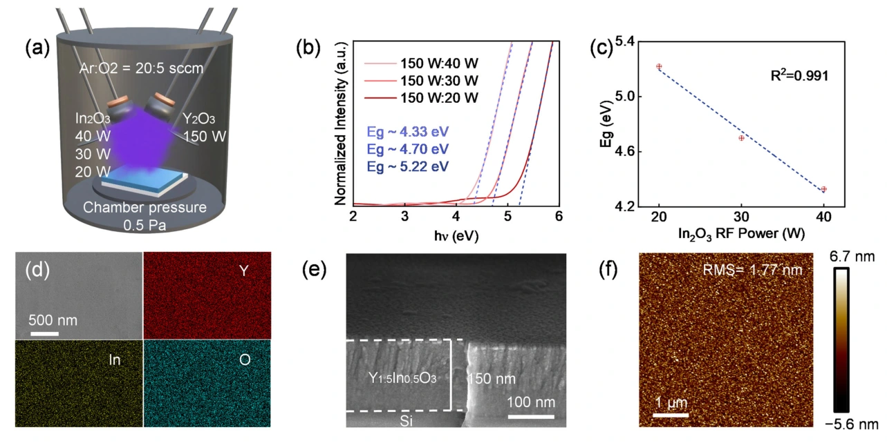
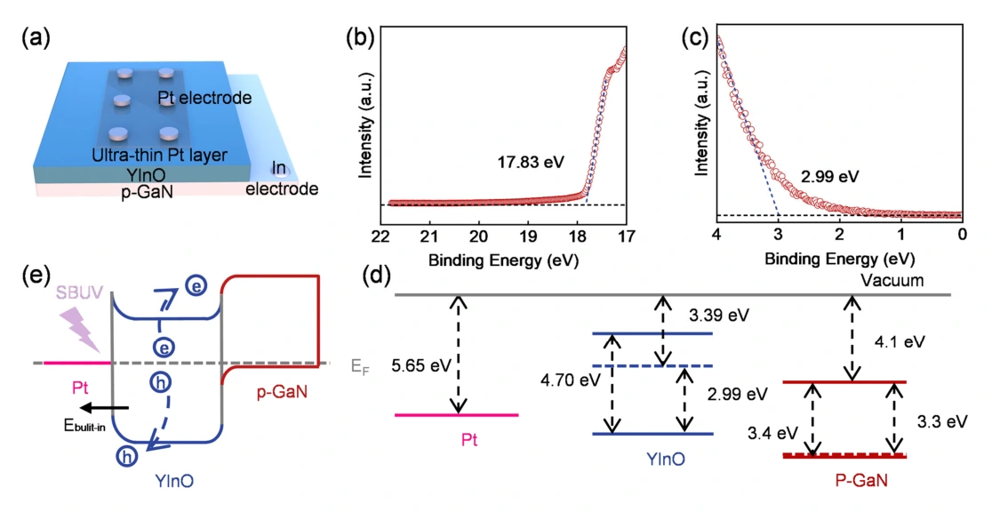
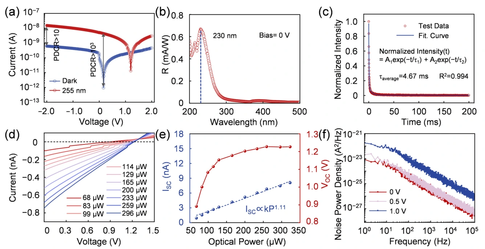
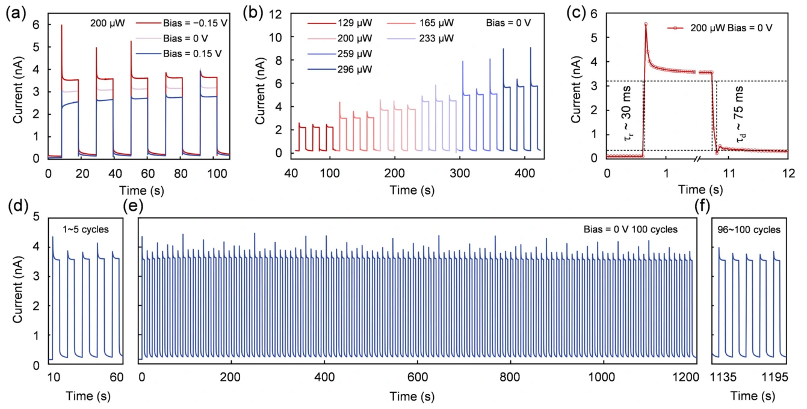

合金能带调控：面向日盲紫外的自供能探测
用合金组分把吸收边调到日盲区
日盲紫外探测关注 200–280 nm 区间。Y₂O₃ 的宽带隙赋予光谱选择性，但也限制较长日盲波长的吸收。作者通过射频磁控共溅射引入 In₂O₃，调节 YₓIn₂₋ₓO₃ 组分，得到光学带隙为 4.70 eV 的 Y₁.₅In₀.₅O₃ 薄膜，并以 SEM、EDS 和 AFM 检查均匀性、组成与形貌。

背靠背势垒与零偏压电荷收集
器件由 Pt / Y₁.₅In₀.₅O₃ / p-GaN 组成，底部采用 In 接触。超薄 Pt 窗口兼顾透光与载流子收集。UPS 与光学带隙用于构建能带图；Pt/合金和合金/p-GaN 接触形成背靠背势垒，抑制暗态载流子注入，并在紫外照射下通过内建电场驱动电荷分离。

关注目标波段，也关注弱信号读出
0 V 下的光谱响应半高宽约为 50 nm，峰值响应度为 0.67 mA/W，255 nm 处响应度为 0.34 mA/W。作者通过暗态低频噪声测量评估弱光检测，报告 1 Hz 下噪声电流为 2.95 × 10⁻¹² A/Hz¹ᐟ²、噪声等效功率为 4.42 × 10⁻⁹ W/Hz¹ᐟ²。

快速开关与长循环保持
在 0 V、255 nm、200 μW 测试条件下，上升与下降时间分别为 30 ms、75 ms。100 次开关循环后，光电流衰减小于 0.8%。合金带隙与异质结势垒的联合设计，为具有光谱选择性和低噪声的自供能紫外探测提供了材料路线。

Bandgap-Tuned Yttrium-Doped Indium Oxide Alloy Thin Films for High-Performance Solar-Blind Ultraviolet Photodetectors
Lu Gan, Peicheng Jiao, Zhengdong Jiang, Yutao Xiong, Yanghui Liu
Technologies 14 (2026), 23